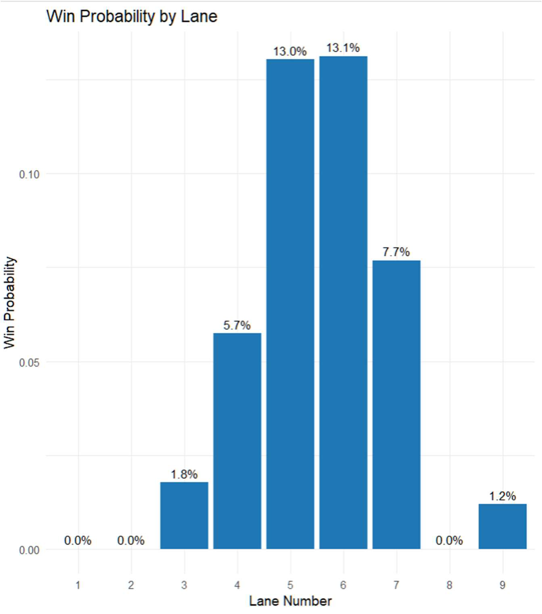
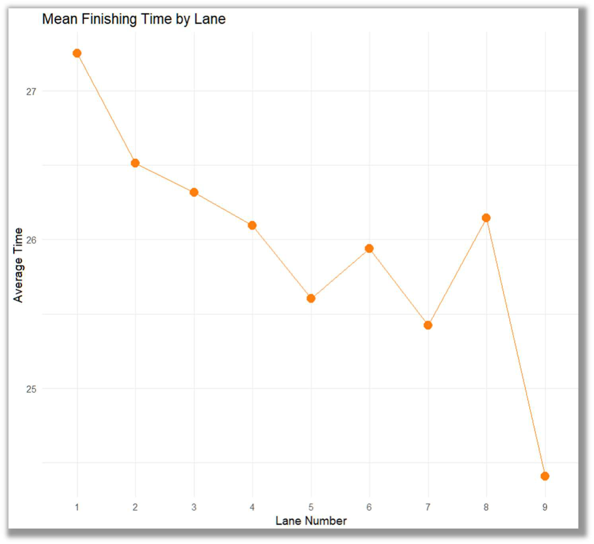

Middle lanes win more sprints. Not because they run faster.
A decade of elite sprint results, tested properly, to settle a piece of track folklore. Lane and winning turn out to be strongly dependent — and finishing times across lanes turn out to be statistically identical. Both things are true at once, and that is the whole finding.
Sprint lanes are not identical. Inside lanes run a tighter curve with worse visibility of the field; outside lanes get a flatter curve but nobody to chase. Athletes and commentators have claimed for decades that middle lanes win more — and the claim is rarely tested at any scale.
Two questions, and the second is the interesting one. Does lane assignment actually change who wins? And if it does, is that because those athletes are running faster, or because of something else entirely?
- Built the dataset. Web-scraped roughly 866 sprint entries across the 100m, 200m and 400m from the Olympics and World Championships, 2008 to 2023, then cleaned and reshaped it in R with the tidyverse.
- Tested lane against winning. Chi-square gave χ²(8) = 50.58, p = 3.16×10⁻⁸. Lane and winning are emphatically not independent.
- Checked whether it's linear. Logistic regression put each step outward at roughly 7.6% higher win odds (OR 1.076), but as a linear term it was not significant (p = 0.26). That is the clue: the effect is about the middle, not about a direction.
- Tested time against lane. ANOVA gave F(8, 857) = 0.19, p = 0.992. No lane is faster. Finishing times are statistically identical.
- Grouped and confirmed. Binned into inside (1–2), middle (3–6) and outside (7–9): χ²(2) = 20.88, p < 0.0001 for winning. A two-way ANOVA confirmed the pattern holds across all three events with no interaction (p = 0.97).


| Test | Result |
|---|---|
| Lane–win association (chi-square) | χ² = 50.6, p = 3×10⁻⁸ |
| Grouped lane–win association | χ²(2) = 20.9, p < 0.0001 |
| Middle-lane win rate | 8.2% |
| Outside-lane win rate | 2.9% |
| Inside-lane win rate | 0.0% |
| Finishing time by lane (ANOVA) | F = 0.19, p = 0.992 |
| Lane × event interaction | p = 0.97 (none) |
Middle lanes give athletes the best chance of winning even though athletes in every lane run statistically identical times. The advantage is structural — race dynamics and the ability to see the field — not physiological.
Worth stating what this does not establish. Lane assignment at this level is earned by semi-final performance, so the fastest qualifiers are allocated middle lanes by design. This analysis shows the association is real and that raw speed does not explain it; cleanly separating seeding from race dynamics would need heat-level data this dataset doesn't carry.